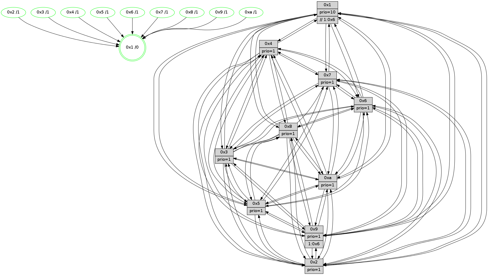

>> << IDX [start] -100 -25 -5 +0 +5 +25 +100 [1165.28616214]
 Previous packets
----------------------------------------------------------------------
1160.557374 beacon01(faad) #0 coord=01,02,03,04,05,06,07,0a,09,08 cycle=688.0ms assoc
-- color-indic=1 64 a3 8a
1160.567356 beacon02(faad) #0 coord=01,02,03,04,05,06,07,0a,09,08 cycle=688.0ms assoc 64 30 bb
1160.577357 beacon03(faad) #0 coord=01,02,03,04,05,06,07,0a,09,08 cycle=688.0ms assoc 64 4a f6
1160.587356 beacon04(faad) #0 coord=01,02,03,04,05,06,07,0a,09,08 cycle=688.0ms assoc 64 3d 1c
1160.597357 beacon05(faad) #0 coord=01,02,03,04,05,06,07,0a,09,08 cycle=688.0ms assoc 64 47 51
1160.607357 beacon06(faad) #0 coord=01,02,03,04,05,06,07,0a,09,08 cycle=688.0ms assoc 64 c9 86
1160.617358 beacon07(faad) #0 coord=01,02,03,04,05,06,07,0a,09,08 cycle=688.0ms assoc 64 b3 cb
1160.627363 beacon0a(faad) #0 coord=01,02,03,04,05,06,07,0a,09,08 cycle=688.0ms assoc 64 c2 c0
1160.637361 beacon09(faad) #0 coord=01,02,03,04,05,06,07,0a,09,08 cycle=688.0ms assoc 64 4c 17
1160.647365 beacon08(faad) #0 coord=01,02,03,04,05,06,07,0a,09,08 cycle=688.0ms assoc 64 36 5a
1160.658936 [Hello(1): seq=650 sym=4,2,9,5,10,3,8,6,7 sysInfo=coloring-mode-on,ColoringModeRequestCalled stat=4:2,15,1,5/2:4,4,4,2/9:2,2,3,7/5:15,2,10,7/10:11,13,9,6/3:7,7,13,6/8:2,12,14,3/6:4,10,5,13/7:3,15,0,14]
1160.662790 [Hello(5): seq=741 sym=7,6,4,3,1,9,8,10,2 sysInfo=hasWarning stat=7:1,10,7,13/6:15,0,9,2/4:15,3,14,13/3:2,12,15,13/1:9,2,2,1/9:3,0,1,9/8:13,13,11,2/10:5,11,14,8/2:12,14,0,6]
1160.665523 [Hello(6): seq=741 sym=2,3,5,4,7,9,8,10,1 sysInfo=hasWarning stat=2:11,2,2,7/3:11,3,14,11/5:4,8,0,1/4:1,7,10,5/7:4,0,5,12/9:6,0,5,7/8:6,4,15,5/10:14,1,4,12/1:11,1,14,1]
1160.668148 [STC(9)->1 #0.179 tree-change,inconsistent-stability,to-color d=1]
1160.669929 [STC(6)->1 #0.179 tree-change,inconsistent-stability,stable,to-color d=1]
1160.671319 [STC(5)->1 #0.179 tree-change,inconsistent-stability,stable,to-color d=1]
1160.672682 [STC(4)->1 #0.179 tree-change,inconsistent-stability,stable,to-color d=1]
1160.675173 [Hello(2): seq=737 sym=4,5,7,6,3,9,8,10,1 sysInfo=hasWarning stat=4:13,2,5,11/5:9,1,11,0/7:7,14,6,14/6:5,11,12,11/3:12,8,11,8/9:7,8,15,6/8:1,1,5,11/10:2,3,1,10/1:12,8,10,0]
1160.678459 [Hello(3): seq=741 sym=1,7,6,2,4,8,9,10,5 sysInfo=hasWarning stat=1:4,0,11,0/7:6,1,13,12/6:3,9,1,0/2:3,5,2,0/4:0,14,0,11/8:2,13,10,4/9:1,8,4,13/10:8,3,12,4/5:5,6,7,15]
1160.682523 [STC(10)->1 #0.179 tree-change,inconsistent-stability,stable,to-color d=1]
1160.685585 [Color(6) seq=373 @0:0 prio=1]
1160.687162 [STC(3)->1 #0.179 tree-change,inconsistent-stability,stable,to-color d=1]
1160.688625 [STC(2)->1 #0.179 tree-change,inconsistent-stability,stable,to-color d=1]
1160.690391 [Color(3) seq=370 @0:0 prio=1]
1160.692514 [Color(2) seq=317 @0:0 prio=1]
1160.701538 [Color(10) seq=330 @0:0 prio=1]
----------------------------------------------------------------------
1161.345506 beacon01(faad) #0 coord=01,02,03,04,05,06,07,0a,09,08 cycle=688.0ms assoc
-- color-indic=1 64 1f 8f
1161.355488 beacon02(faad) #0 coord=01,02,03,04,05,06,07,0a,09,08 cycle=688.0ms assoc 64 8c be
1161.365489 beacon03(faad) #0 coord=01,02,03,04,05,06,07,0a,09,08 cycle=688.0ms assoc 64 f6 f3
1161.375489 beacon04(faad) #0 coord=01,02,03,04,05,06,07,0a,09,08 cycle=688.0ms assoc 64 81 19
1161.385490 beacon05(faad) #0 coord=01,02,03,04,05,06,07,0a,09,08 cycle=688.0ms assoc 64 fb 54
1161.395489 beacon06(faad) #0 coord=01,02,03,04,05,06,07,0a,09,08 cycle=688.0ms assoc 64 75 83
1161.405489 beacon07(faad) #0 coord=01,02,03,04,05,06,07,0a,09,08 cycle=688.0ms assoc 64 0f ce
1161.415494 beacon0a(faad) #0 coord=01,02,03,04,05,06,07,0a,09,08 cycle=688.0ms assoc 64 7e c5
1161.425494 beacon09(faad) #0 coord=01,02,03,04,05,06,07,0a,09,08 cycle=688.0ms assoc 64 f0 12
1161.435495 beacon08(faad) #0 coord=01,02,03,04,05,06,07,0a,09,08 cycle=688.0ms assoc 64 8a 5f
1161.446694 [Hello(10): seq=674 sym=6,2,3,8,7,5,9,4,1 sysInfo=hasWarning stat=6:14,12,2,6/2:12,6,3,10/3:13,4,7,11/8:4,2,11,2/7:3,5,2,6/5:7,3,13,14/9:7,15,4,2/4:12,4,3,0/1:7,7,8,1]
1161.449993 [Hello(8): seq=685 sym=5,2,3,4,9,6,7,10,1 sysInfo=hasWarning stat=5:6,13,4,0/2:0,1,2,10/3:10,6,5,15/4:11,1,8,10/9:1,7,9,3/6:8,3,3,13/7:12,13,3,0/10:1,10,10,4/1:9,11,13,0]
1161.453663 [Color(1) seq=422 @0:0 prio=10 >>1.@6,1.@7,1.@8]
1161.456965 [Color(5) seq=335 @0:0 prio=1]
1161.458384 [Color(8) seq=340 @0:0 prio=1]
1161.460753 [Hello(7): seq=741 sym=2,3,5,6,4,9,10,1 sysInfo=hasWarning stat=2:7,11,11,1/3:12,2,10,15/5:14,7,5,1/6:9,6,7,9/4:3,14,5,1/9:8,1,10,1/10:2,9,12,5/1:10,10,13,0]
1161.463778 [Color(7) seq=287 @0:0 prio=1]
1161.466067 [Hello(4): seq=741 sym=5,7,6,2,3,9,8,10,1 sysInfo= stat=5:12,3,14,15/7:12,12,4,1/6:1,0,1,12/2:2,4,11,14/3:14,12,2,11/9:1,13,7,11/8:15,4,0,6/10:15,10,11,13/1:1,1,14,1]
1161.469531 [Color(4) seq=298 @0:0 prio=1]
----------------------------------------------------------------------
1162.133638 beacon01(faad) #0 coord=01,02,03,04,05,06,07,0a,09,08 cycle=688.0ms assoc
-- color-indic=1 64 2b 97
1162.143620 beacon02(faad) #0 coord=01,02,03,04,05,06,07,0a,09,08 cycle=688.0ms assoc 64 b8 a6
1162.153619 beacon03(faad) #0 coord=01,02,03,04,05,06,07,0a,09,08 cycle=688.0ms assoc 64 c2 eb
1162.163622 beacon04(faad) #0 coord=01,02,03,04,05,06,07,0a,09,08 cycle=688.0ms assoc 64 b5 01
1162.173620 beacon05(faad) #0 coord=01,02,03,04,05,06,07,0a,09,08 cycle=688.0ms assoc 64 cf 4c
1162.183620 beacon06(faad) #0 coord=01,02,03,04,05,06,07,0a,09,08 cycle=688.0ms assoc 64 41 9b
1162.193621 beacon07(faad) #0 coord=01,02,03,04,05,06,07,0a,09,08 cycle=688.0ms assoc 64 3b d6
1162.203625 beacon0a(faad) #0 coord=01,02,03,04,05,06,07,0a,09,08 cycle=688.0ms assoc 64 4a dd
1162.213625 beacon09(faad) #0 coord=01,02,03,04,05,06,07,0a,09,08 cycle=688.0ms assoc 64 c4 0a
1162.223625 beacon08(faad) #0 coord=01,02,03,04,05,06,07,0a,09,08 cycle=688.0ms assoc 64 be 47
1162.234574 [Hello(1): seq=651 sym=4,2,9,5,10,3,8,6,7 sysInfo=coloring-mode-on,ColoringModeRequestCalled stat=4:3,0,2,5/2:5,5,5,2/9:2,2,4,7/5:0,3,11,7/10:12,14,10,6/3:8,8,14,6/8:3,13,14,3/6:5,11,6,13/7:4,0,0,14]
1162.237092 [Hello(5): seq=742 sym=7,6,4,3,1,9,8,10,2 sysInfo=hasWarning stat=7:2,11,7,13/6:15,1,9,2/4:0,4,15,13/3:3,13,0,13/1:9,2,2,1/9:4,0,1,9/8:13,14,11,2/10:5,12,15,8/2:13,15,1,6]
1162.240781 [Color(10) seq=331 @0:0 prio=1]
1162.242046 [Hello(2): seq=738 sym=4,5,7,6,3,9,8,10,1 sysInfo=hasWarning stat=4:14,3,5,11/5:9,2,11,0/7:8,15,6,14/6:5,11,12,11/3:12,8,11,8/9:7,8,15,6/8:2,2,5,11/10:2,4,1,10/1:13,9,10,0]
1162.245814 [Color(2) seq=318 @0:0 prio=1]
1162.247255 [Hello(3): seq=742 sym=1,7,6,2,4,8,9,10,5 sysInfo=hasWarning stat=1:5,1,11,0/7:7,2,13,12/6:3,9,1,0/2:3,6,2,0/4:1,15,0,11/8:3,14,10,4/9:1,8,4,13/10:9,4,12,4/5:5,7,7,15]
1162.250736 [Color(3) seq=371 @0:0 prio=1]
1162.253513 [Hello(6): seq=742 sym=2,3,5,4,7,9,8,10,1 sysInfo=hasWarning stat=2:11,3,3,7/3:11,4,15,11/5:5,9,0,1/4:2,8,10,5/7:5,1,5,12/9:6,0,5,7/8:7,5,15,5/10:15,2,4,12/1:12,2,14,1]
1162.257299 [Color(6) seq=374 @0:0 prio=1]
----------------------------------------------------------------------
1162.921768 beacon01(faad) #0 coord=01,02,03,04,05,06,07,0a,09,08 cycle=688.0ms assoc
-- color-indic=1 64 97 92
1162.931750 beacon02(faad) #0 coord=01,02,03,04,05,06,07,0a,09,08 cycle=688.0ms assoc 64 04 a3
1162.941751 beacon03(faad) #0 coord=01,02,03,04,05,06,07,0a,09,08 cycle=688.0ms assoc 64 7e ee
1162.951752 beacon04(faad) #0 coord=01,02,03,04,05,06,07,0a,09,08 cycle=688.0ms assoc 64 09 04
1162.961752 beacon05(faad) #0 coord=01,02,03,04,05,06,07,0a,09,08 cycle=688.0ms assoc 64 73 49
1162.971751 beacon06(faad) #0 coord=01,02,03,04,05,06,07,0a,09,08 cycle=688.0ms assoc 64 fd 9e
1162.981752 beacon07(faad) #0 coord=01,02,03,04,05,06,07,0a,09,08 cycle=688.0ms assoc 64 87 d3
1162.991756 beacon0a(faad) #0 coord=01,02,03,04,05,06,07,0a,09,08 cycle=688.0ms assoc 64 f6 d8
1163.011756 beacon08(faad) #0 coord=01,02,03,04,05,06,07,0a,09,08 cycle=688.0ms assoc 64 02 42
1163.023634 [Hello(10): seq=675 sym=6,2,3,8,7,5,9,4,1 sysInfo=hasWarning stat=6:15,13,2,6/2:13,7,3,10/3:14,5,7,11/8:5,3,11,2/7:4,6,2,6/5:8,4,13,14/9:7,15,4,2/4:13,5,3,0/1:8,8,8,1]
1163.027565 [Hello(8): seq=686 sym=5,2,3,4,9,6,7,10,1 sysInfo=hasWarning stat=5:7,13,4,0/2:1,2,2,10/3:11,7,5,15/4:12,2,8,10/9:2,7,9,3/6:9,4,3,13/7:13,14,3,0/10:1,11,10,4/1:10,11,13,0]
1163.030732 [Color(1) seq=423 @0:0 prio=10 >>1.@6,1.@7,1.@8]
1163.035957 [Color(8) seq=341 @0:0 prio=1]
1163.037684 [Hello(7): seq=742 sym=2,3,5,6,4,9,10,1 sysInfo=hasWarning stat=2:8,12,11,1/3:13,3,10,15/5:15,7,5,1/6:10,7,7,9/4:4,15,5,1/9:8,1,10,1/10:3,10,12,5/1:11,10,13,0]
1163.041020 [Color(7) seq=288 @0:0 prio=1]
1163.042832 [Color(5) seq=336 @0:0 prio=1]
1163.045887 [Hello(4): seq=742 sym=5,7,6,2,3,9,8,10,1 sysInfo= stat=5:13,3,14,15/7:12,12,4,1/6:2,1,1,12/2:3,5,11,14/3:15,13,2,11/9:2,13,7,11/8:15,4,0,6/10:15,11,11,13/1:2,1,14,1]
1163.048703 [Color(4) seq=299 @0:0 prio=1]
----------------------------------------------------------------------
1163.709900 beacon01(faad) #0 coord=01,02,03,04,05,06,07,0a,09,08 cycle=688.0ms assoc
-- color-indic=1 64 53 9c
1163.719882 beacon02(faad) #0 coord=01,02,03,04,05,06,07,0a,09,08 cycle=688.0ms assoc 64 c0 ad
1163.729883 beacon03(faad) #0 coord=01,02,03,04,05,06,07,0a,09,08 cycle=688.0ms assoc 64 ba e0
1163.739884 beacon04(faad) #0 coord=01,02,03,04,05,06,07,0a,09,08 cycle=688.0ms assoc 64 cd 0a
1163.749884 beacon05(faad) #0 coord=01,02,03,04,05,06,07,0a,09,08 cycle=688.0ms assoc 64 b7 47
1163.759885 beacon06(faad) #0 coord=01,02,03,04,05,06,07,0a,09,08 cycle=688.0ms assoc 64 39 90
1163.769884 beacon07(faad) #0 coord=01,02,03,04,05,06,07,0a,09,08 cycle=688.0ms assoc 64 43 dd
1163.779887 beacon0a(faad) #0 coord=01,02,03,04,05,06,07,0a,09,08 cycle=688.0ms assoc 64 32 d6
1163.789888 beacon09(faad) #0 coord=01,02,03,04,05,06,07,0a,09,08 cycle=688.0ms assoc 64 bc 01
1163.799889 beacon08(faad) #0 coord=01,02,03,04,05,06,07,0a,09,08 cycle=688.0ms assoc 64 c6 4c
1163.812076 [Hello(5): seq=743 sym=7,6,4,3,1,9,8,10,2 sysInfo=hasWarning stat=7:2,11,7,13/6:0,2,9,2/4:1,5,15,13/3:4,14,0,13/1:9,2,2,1/9:5,0,1,9/8:13,14,11,2/10:5,13,15,8/2:14,0,1,6]
1163.815513 [STC(1) #0.180 tree-change,inconsistent-stability,stable,to-color d=0]
1163.816751 [Color(10) seq=332 @0:0 prio=1]
1163.820047 [Hello(2): seq=739 sym=4,5,7,6,3,9,8,10,1 sysInfo=hasWarning stat=4:15,4,5,11/5:10,3,11,0/7:9,0,6,14/6:6,12,12,11/3:13,9,11,8/9:7,8,15,6/8:3,3,5,11/10:2,4,1,10/1:14,10,10,0]
1163.823489 [Color(2) seq=319 @0:0 prio=1]
1163.824937 [Hello(3): seq=743 sym=1,7,6,2,4,8,9,10,5 sysInfo=hasWarning stat=1:6,2,11,0/7:8,3,13,12/6:4,10,1,0/2:3,6,2,0/4:2,0,0,11/8:4,15,10,4/9:1,8,4,13/10:10,4,12,4/5:6,8,7,15]
1163.829049 [Color(3) seq=372 @0:0 prio=1]
1163.833929 [Hello(6): seq=743 sym=2,3,5,4,7,9,8,10,1 sysInfo=hasWarning stat=2:11,3,3,7/3:11,4,15,11/5:6,10,0,1/4:3,9,10,5/7:6,2,5,12/9:6,0,5,7/8:8,6,15,5/10:0,2,4,12/1:13,3,14,1]
1163.837067 [Color(6) seq=375 @0:0 prio=1]
----------------------------------------------------------------------
1164.498031 beacon01(faad) #0 coord=01,02,03,04,05,06,07,0a,09,08 cycle=688.0ms assoc
-- color-indic=1 64 ef 99
1164.508012 beacon02(faad) #0 coord=01,02,03,04,05,06,07,0a,09,08 cycle=688.0ms assoc 64 7c a8
1164.518013 beacon03(faad) #0 coord=01,02,03,04,05,06,07,0a,09,08 cycle=688.0ms assoc 64 06 e5
1164.528015 beacon04(faad) #0 coord=01,02,03,04,05,06,07,0a,09,08 cycle=688.0ms assoc 64 71 0f
1164.538014 beacon05(faad) #0 coord=01,02,03,04,05,06,07,0a,09,08 cycle=688.0ms assoc 64 0b 42
1164.548014 beacon06(faad) #0 coord=01,02,03,04,05,06,07,0a,09,08 cycle=688.0ms assoc 64 85 95
1164.558015 beacon07(faad) #0 coord=01,02,03,04,05,06,07,0a,09,08 cycle=688.0ms assoc 64 ff d8
1164.568019 beacon0a(faad) #0 coord=01,02,03,04,05,06,07,0a,09,08 cycle=688.0ms assoc 64 8e d3
1164.578020 beacon09(faad) #0 coord=01,02,03,04,05,06,07,0a,09,08 cycle=688.0ms assoc 64 00 04
1164.588019 beacon08(faad) #0 coord=01,02,03,04,05,06,07,0a,09,08 cycle=688.0ms assoc 64 7a 49
1164.600204 [Hello(10): seq=676 sym=6,2,3,8,7,5,9,4,1 sysInfo=hasWarning stat=6:0,14,2,6/2:14,8,3,10/3:15,6,7,11/8:6,4,11,2/7:5,7,2,6/5:8,5,13,14/9:7,15,4,2/4:14,6,3,0/1:9,9,8,1]
1164.603437 [Hello(9): seq=687 sym=2,5,3,4,7,6,8,10,1 sysInfo=hasWarning stat=2:7,6,12,8/5:0,7,11,5/3:11,15,2,15/4:7,8,1,0/7:15,15,2,1/6:7,12,9,11/8:13,3,14,3/10:14,13,3,4/1:7,3,0,1]
1164.606251 [STC(9)->1 #0.180 tree-change,inconsistent-stability,stable,to-color d=1]
1164.608216 [TreeStatus(9)-.->1 #0.180 tree-change,inconsistent-stability,stable child=1]
1164.609867 [Hello(4): seq=743 sym=5,7,6,2,3,9,8,10,1 sysInfo= stat=5:14,3,14,15/7:12,12,4,1/6:3,2,1,12/2:4,6,11,14/3:0,14,2,11/9:3,13,7,11/8:15,4,0,6/10:15,12,11,13/1:2,1,15,1]
1164.612603 [STC(5)->1 #0.180 tree-change,inconsistent-stability,stable,to-color d=1]
1164.614946 [STC(4)->1 #0.180 tree-change,inconsistent-stability,stable,to-color d=1]
1164.617881 [Color(4) seq=300 @0:0 prio=1]
1164.619298 [Color(5) seq=337 @0:0 prio=1]
1164.621381 [Hello(8): seq=687 sym=5,2,3,4,9,6,7,10,1 sysInfo=hasWarning stat=5:8,14,4,0/2:2,3,2,10/3:12,8,5,15/4:13,3,8,10/9:3,7,9,3/6:10,5,3,13/7:14,15,3,0/10:1,12,10,4/1:10,11,14,0]
1164.625475 [STC(8)->1 #0.180 tree-change,inconsistent-stability,stable,to-color d=1]
1164.628777 [Hello(7): seq=743 sym=2,3,5,6,4,9,10,1 sysInfo=hasWarning stat=2:9,13,11,1/3:14,4,10,15/5:0,8,5,1/6:11,8,7,9/4:5,0,5,1/9:8,1,10,1/10:4,11,12,5/1:11,10,14,0]
1164.633395 [STC(7)->1 #0.180 tree-change,inconsistent-stability,stable,to-color d=1]
1164.637277 [Color(7) seq=289 @0:0 prio=1]
1164.638881 [Color(8) seq=342 @0:0 prio=1]